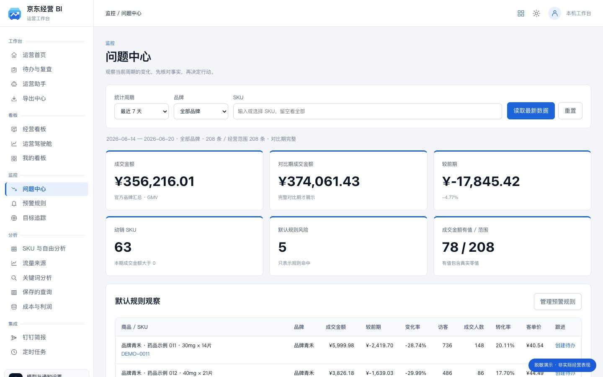
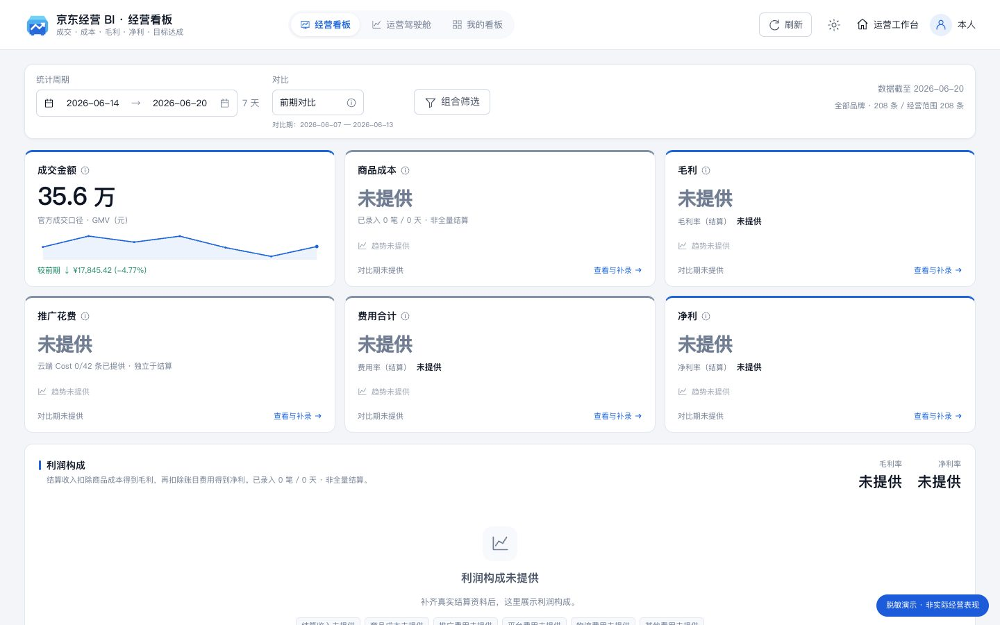
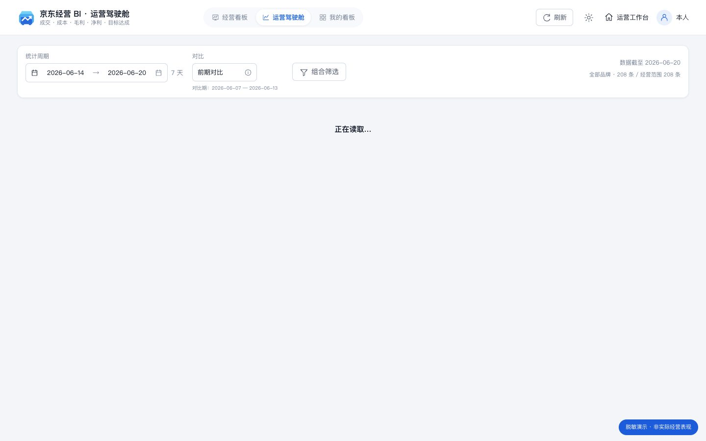
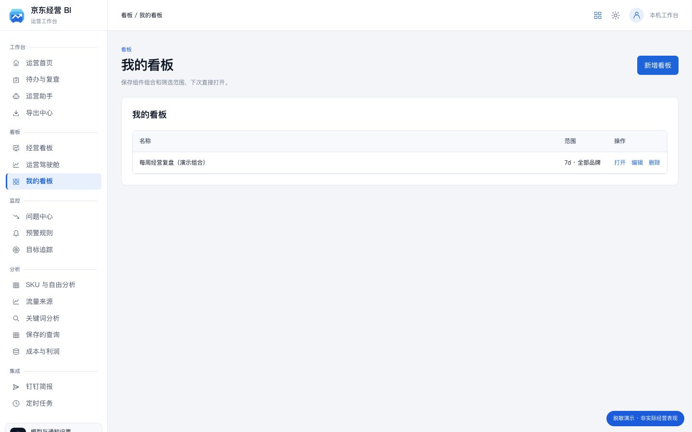
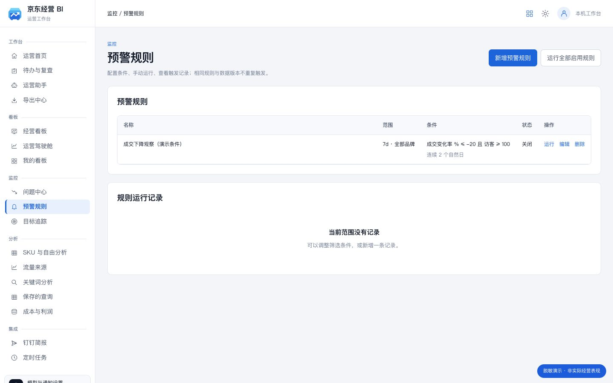
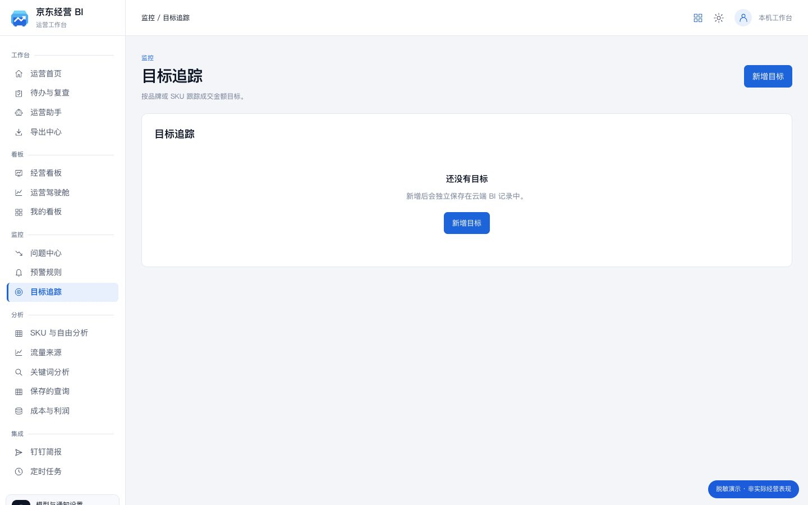
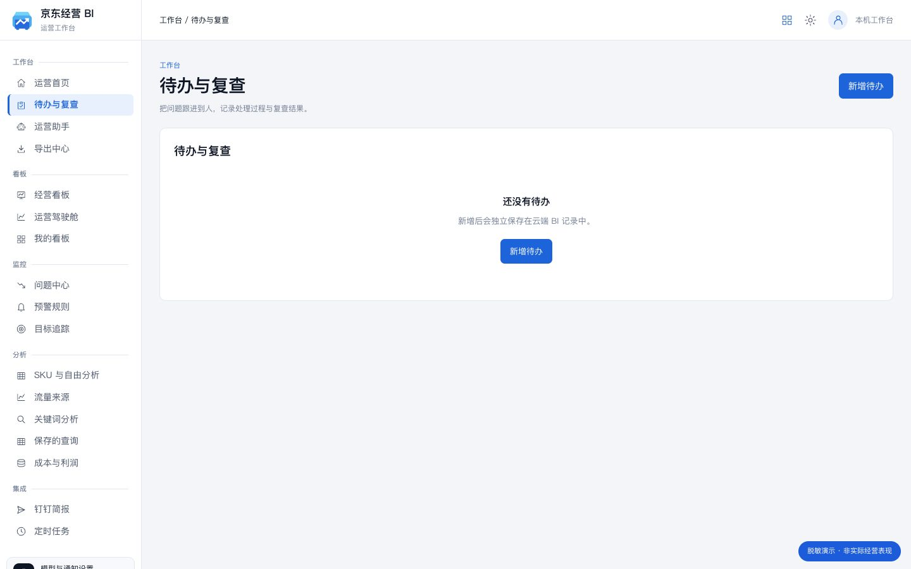
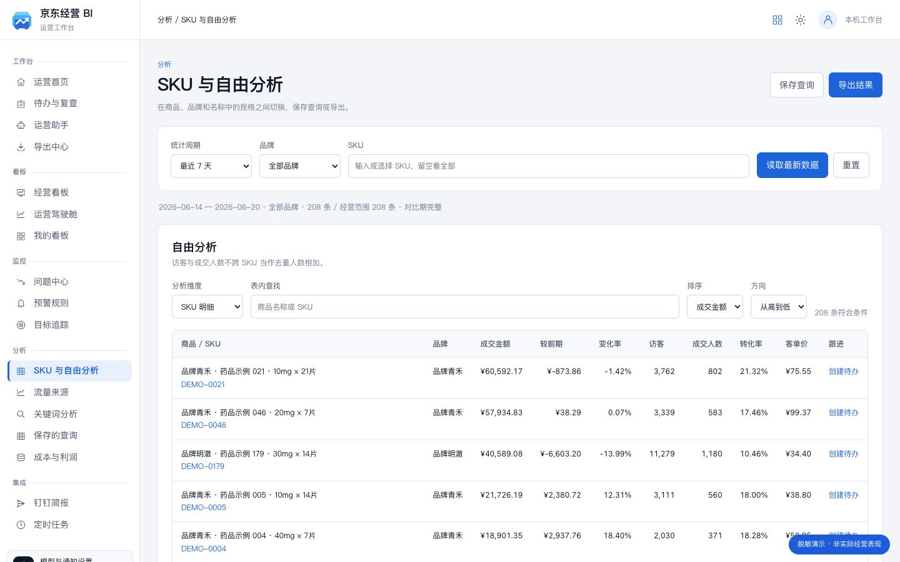
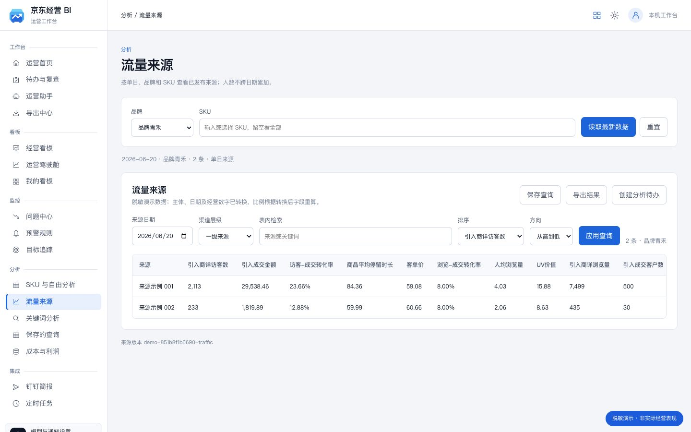
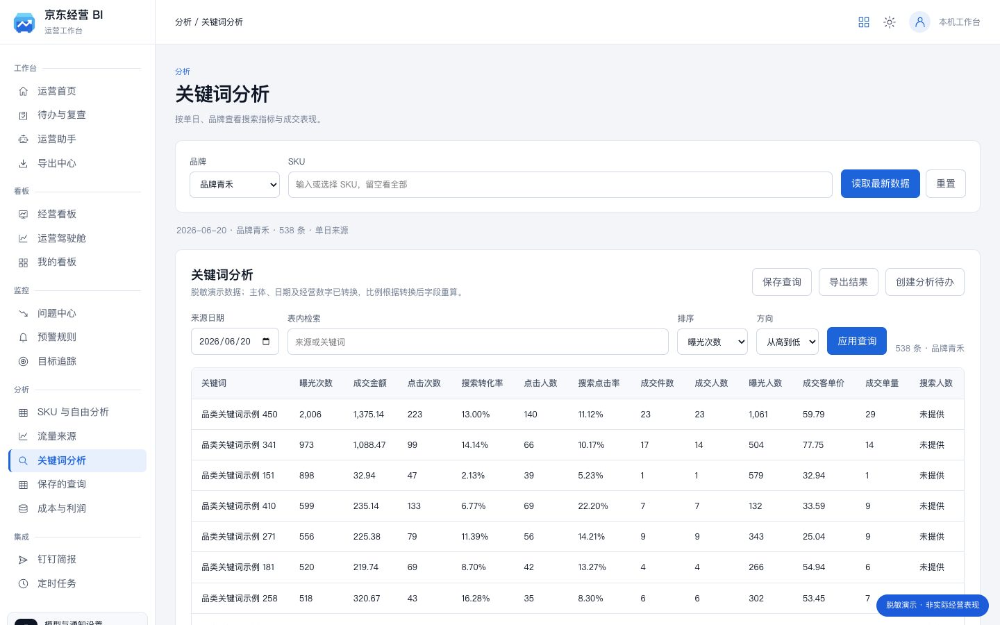

问题中心
值得先看一眼。
按成交变化和规则识别问题，先核对证据，再转为待办。
京东自营 · 药品经营分析系统
经营变化看得见，每个数字有出处。
连接已发布经营数据，从品牌到单品，看懂成交变化。用自然语言追问，把发现变成待办；再用同一份证据复查结果。

经营看板 · 实际界面演示数据不代表实际经营表现
先看整体，再看品牌，最后找到那个 SKU。同一份经营事实，连起发现、分析和跟进。
运营助手 · DeepSeek
模型通过限定工具查询经营数据。每轮保留自己的统计周期、筛选范围、数据版本、图表和来源。历史回答可以恢复，旧版本不会被包装成最新结果。
正式工作台的回答使用真实 DeepSeek；此页面仅展示功能与流程。
看板
经营看板展示成交与财务口径，运营驾驶舱展开品牌、趋势和单品。常用的筛选和组件组合，可以保存到自己的看板。
六张财务卡保留完整位置。成交金额来自经营事实；成本、毛利和净利来自独立结算账目。缺什么、覆盖到哪天，都写清楚。
查看品牌表现、成交趋势、变化来源和涨跌列表。切换周期、品牌与 SKU，数据和口径一起切换。

选择经营指标、品牌、趋势、变化、风险和 SKU 组件，保存自己的组合。再次打开，恢复筛选并读取最新发布数据。

监控
把异常、规则、目标与待办连起来。条件命中之后，保留触发时的观察值与版本；处理之后，再记录复查结果。

问题中心
按成交变化和规则识别问题，先核对证据，再转为待办。

预警规则
全部满足或任一满足，支持连续自然日判断；每次运行保留记录，相同事件不重复生成。

目标进度
设置品牌或 SKU 目标，在目标自身的周期和范围内核对实际金额。

待办与复查
负责人、期限、处理记录、复查结果与来源证据保存在一起。
分析
按品牌、SKU 和规格查看经营表现，结合单日流量与关键词来源。查询条件可以保存，当前结果可以导出，文件保留范围和数据版本。

试着筛一下
| 商品 / SKU | 品牌 | 成交金额 | 较前期 | 变化率 |
|---|
分品牌、日期和渠道层级查看来源，保留每次发布的实际覆盖情况。

查看单日关键词表现，检索、排序、保存查询，再把结果转为待办。

钉钉
配置独立群机器人，先生成经营简报预览，再确认发送。每天的简报和规则检查可以设为定时任务；电脑离线不执行，恢复后记录漏跑，不集中补发。
带上周期、范围、金额和数据版本。
正式系统发送到本人配置的接收群。
成功、失败、状态不明和漏跑分别记录。
预设流程，不会向任何人发送消息。
技术
正式 BI 的代码、运行环境、配置和启动入口独立。经营事实从云端 MySQL 读取；看板、查询、会话、预警和待办只写入 BI 自己的记录。
版本 · 日期 · 指标合同 · 完整性
统一范围 · 只读取数 · 独立记录
原生 HTML / JS · DeepSeek · 钉钉
缺失不补零，对比期不完整不算环比。成交金额不替代结算收入，账目覆盖范围单独标注。
本页面仅包含公开展示素材。真实数据库、模型配置和业务记录留在正式系统中。
路线图
公开页面只介绍当前实现的能力；需要业务资料或接收配置的环节，单独说明。
看板与查询保存，连续问答，SKU / 流量 / 关键词分析，规则运行、目标与待办、导入导出。
录入结算收入、商品成本及费用后计算利润。钉钉填写接收配置后，先在测试群验证送达。
账号权限、技能与评测后台、采集管理和外网部署暂未纳入本版，不作为已完成能力展示。
截图
由当前工作台代码加载脱敏数据生成。点开看细节，也可以在浅色和深色之间对照。
交付与使用
正式工作台在本人电脑上后台运行，桌面入口直接打开。这个 GitHub 页面用于介绍与演示，不承担真实经营写入。
真实数据、DeepSeek 自由提问、独立记录、本人配置的集成。
脱敏截图、预设演示、静态筛选；可分享、可独立访问。